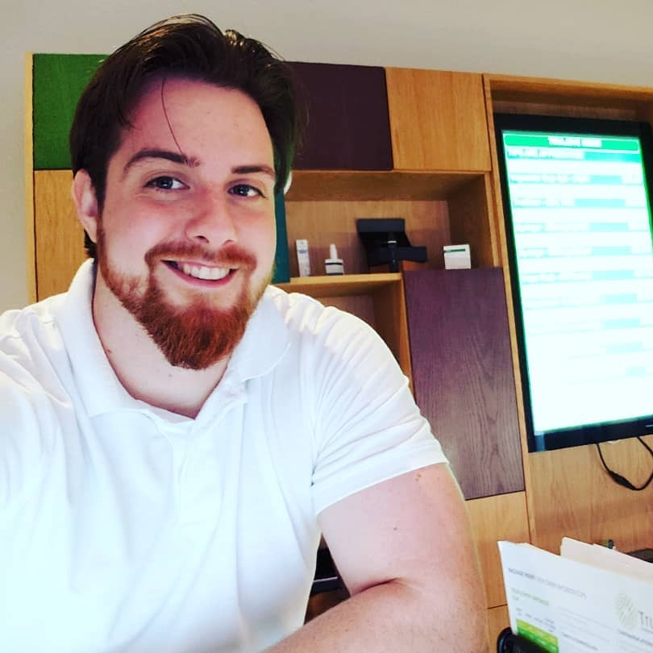

Resume
Skills
Trained in acting, movement, stage combat, lighting, costume, dialects, directing and set design. Licensed driver, computer skills in Microsoft Office programs, graphic designing and Photoshop.
Work Experience
Trulieve, Miami, FL - Patient Consultant
July 2018 - Present
- Daily interaction with medical patients, caretakers and physicians. Dealt with cash, digital transactions and highly concentrated medical products. Maintained full store inventory, delivered products to patients and other stores, and coordinated other patient consultants.
Coral Reef Yacht Club, Miami, FL - Waiter, Maintenance and Event Management
August 2012 - July 2018
- Served the club’s exclusive members and families, handling cash and credit cards, organizational skills, problem solving, inventory management, prep and dessert cook, event manager, maintenance and handling heavy items.
Education
Miami Dade College, Miami, FL - Theatre
August 2012 - December 2014
- Kennedy Center American College Theatre Festival Nominee’s Partner 2013 and 2014
- First Miami Dade College, Wolfson Campus student cast in a Kennedy Center American College Theatre Festival (KCACTF) play reading
University of Miami, Coral Gables, FL - B.A. Theatre and Minor in Broadcasting Journalism
January 2015 - Present
- Took semester courses with Lee Soroko (Combat and Acting), Maha McCain (Voice, Movement and Acting) and Bruce Miller (Acting for the Stage). Journalism courses with NY Times author Catharine Skipp and Professor Sally Hughes. Attended private Univision tour and business meeting with Vice President Jose Zamora.
Hobbies
- Traveling
- Swimming
- Video Games
- Kayaking
- Theatre
- Sports
- Drawing/li>
- Filming
Hello, paragraph here
Links
Want to check out some of my go to activities? Click below!
Link to my favorite kayak spot
Link to my favorite travel spot
Images
Yours truly
